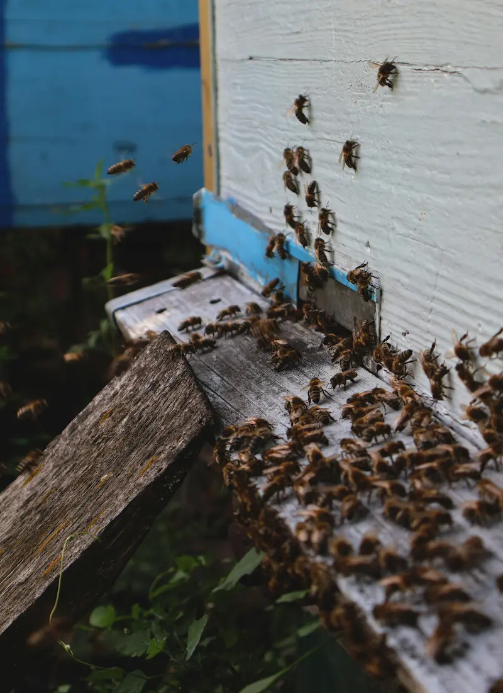
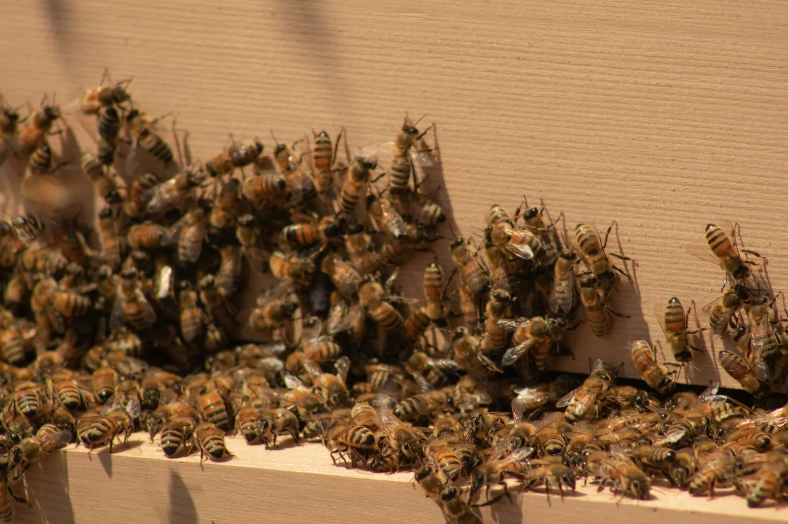
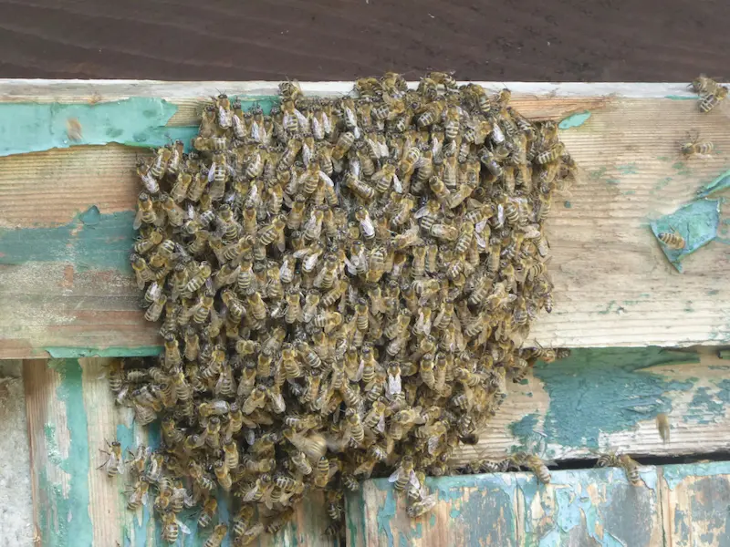

Honey Bee Diseases and Pests in the UK – Overview for Beekeepers
Last updated: 1 May 2026

Honey bee diseases and pests are an unavoidable part of beekeeping, but with regular inspections, good hive hygiene and clear guidance they can be managed. This page provides an overview of the main disease and pest groups that affect colonies in the UK and explains how they link to day-to-day management, seasonal decision-making and the wider year in the apiary.
New beekeepers are often worried about getting everything wrong or missing early signs of trouble. The aim here is not to make you anxious, but to show that honey bee health is something you can monitor and improve over time, especially when you work alongside your local association, inspectors and official resources such as BeeBase. If you are not sure what problem you are looking at, try the interactive colony health triage tool to work through symptoms step by step, or use the bee health checker if you prefer a quicker symptom-based route. If the signs do not obviously fit foulbrood, varroa or a classic pest problem, the other conditions page is a useful next stop.
Download printable checker (Word/PDF)
Bee health also changes through the season. Spring inspections often focus on brood health, colony build-up and early warning signs, while late summer and early autumn are key periods for varroa control and winter preparation. For the bigger seasonal picture, see the year in the apiary, especially spring disease checks in April, May colony checks, late-summer varroa planning in August and September follow-up checks.
Main Categories of Honey Bee Diseases and Pests
For practical purposes, it helps to think about honey bee health problems in a few main groups:
-
Bacterial diseases: These include American foulbrood (AFB) and European foulbrood (EFB), which are notifiable in the UK and require formal action if confirmed. Learn more in the bacterial bee diseases guide.
-
Viral diseases: Viruses such as deformed wing virus often spread in close connection with varroa mite infestations. These are covered in more depth in the viral bee diseases section.
-
Parasitic mites: Varroa destructor is the most significant mite affecting UK honey bees. It weakens bees and acts as a vector for disease. See the dedicated varroa management guide, parasitic mites overview for details on monitoring, treatment timing and seasonal planning.
-
Pests and predators: Wax moths, wasps and other pests can damage comb and weaken colonies. Emerging threats such as the small hive beetle are also taken seriously in UK guidance. More on these in the bee pests guide.
-
Other conditions: Some problems do not fit neatly into one group – for example, chilled brood, queen issues, nutritional stress, chalkbrood, starvation or colony-collapse type losses. These are explored in more detail in the other conditions section, which is especially useful when something looks wrong but does not clearly point to a single disease.
Recognising When Something Is Wrong
The first step in protecting your bees is knowing what a healthy colony looks like. That way, changes stand out more easily. If you notice something odd but cannot name the problem yet, the colony health triage tool can help you narrow it down before diving into the detailed disease pages, while the bee health checker gives a simpler symptom-to-action overview. If the issue seems to be centred on uneven brood, scattered brood or suspicious cappings, compare what you are seeing with the brood pattern guide. Over time you will become more confident judging:
-
Brood pattern: Healthy brood is usually compact and even, with few empty cells scattered across the area. Irregular patterns, sunken cappings or discoloured larvae may suggest a problem.
-
Colony strength: Compare the number of bees and frames of brood with other colonies in the same apiary. One weak hive among many strong ones may need closer attention.
-
Behaviour: Bees that are unusually aggressive, lethargic or disorientated may be signalling stress or illness.
-
Smells and appearance: Sour, unpleasant odours or ropy, sunken brood can point towards foulbrood and should be taken seriously.
Make use of your local beekeeping association and mentors. Showing frames during training sessions, or asking an experienced beekeeper to visit your apiary, can help you gain confidence in distinguishing normal variation from genuine disease signs. It also helps to compare what you are seeing with the seasonal expectations set out in the year in the apiary, particularly during April and May when brood health and colony growth start to accelerate.
Hive Hygiene – Simple Habits That Reduce Risk

Good hive hygiene is one of the most effective tools you have for reducing disease pressure. Many of the best habits are simple and low-cost, but they rely on consistency:
-
Keep equipment clean: Scrape and flame-clean tools and hive parts where appropriate. Avoid letting equipment sit dirty for long periods between seasons.
-
Manage comb carefully: Replace very dark or damaged combs over time to reduce disease build-up and pesticide residues. Store drawn comb safely away from wax moth when not in use.
-
Use separate tools for suspect hives: If you are unsure about a colony, set aside dedicated tools and gloves and avoid moving frames between hives until you have advice.
-
Avoid unknown second-hand frames: Buying used frames and comb of unknown history can bring someone else's problem into your apiary. New frames and foundation are often a safer choice.
-
Control robbing: Reduce the risk of bees robbing from weak or diseased colonies by keeping entrances appropriate to colony strength and avoiding leaving exposed honey or comb near hives.
These themes are explored in more detail in the dedicated hive hygiene guide, which covers cleaning methods, comb change and planning apiary layouts to support good practice throughout the beekeeping season.
Working with Official UK Guidance and BeeBase

In the UK, notifiable diseases such as AFB and EFB are managed with support from the National Bee Unit and bee inspectors. Official guidance changes over time as new research and risks emerge, so it is important to use up-to-date information from trusted sources.
Registering your colonies on BeeBase is voluntary but encouraged. It helps inspectors contact you quickly if notifiable disease is found nearby and provides access to leaflets, training material and local disease alerts.
If you suspect foulbrood or are unsure about a serious disease, do not move equipment or bees between colonies. Contact your local bee inspector or follow the advice given on BeeBase and through your association. Acting early and following official guidance protects your bees and your neighbours' bees.
Record-Keeping and Spotting Patterns

Written records turn individual inspections into a bigger picture of colony health. Noting down brood pattern, temperament, varroa treatments, feeding and any concerns after each visit helps you. If you use any veterinary medicines in your hives (including authorised varroa treatments), keep a clear treatment record of what was used, when, and on which colony, and retain it for at least 5 years. For seasonal treatment timing, also see the varroa management guide.
-
Spot changes earlier and compare colonies fairly.
-
Look back at what did or did not work in previous seasons.
-
Provide clearer information if an inspector, vet or mentor needs to help diagnose a problem.
Some beekeepers are happy with a notebook in the bee shed; others prefer a more structured approach. Digital tools such as the HiveTag web app can help you log inspections, treatments and hive locations so that patterns become easier to see across an entire season or apiary.
Protecting Bees, Honey and the Wider Environment
Healthy colonies do more than produce honey. They pollinate crops, gardens and wild spaces, supporting biodiversity and local food production. Keeping on top of honey bee diseases and pests is part of looking after that wider system.
Alongside disease control, you can support pollinators by planting for nectar and pollen, reducing pesticide use and sharing reliable information with friends and neighbours. The pollination and help the bees sections on this site offer more ideas for making a positive difference beyond your own hives.
Use this diseases and pests overview as a starting point, or begin with the colony health triage tool if you want to narrow down symptoms first. You can then explore the more detailed pages on bacterial diseases, viral diseases, bee pests, parasitic mites and other conditions to build a rounded picture of honey bee health in the UK. For a month-by-month view of when risks tend to show up, follow the year in the apiary, and for focused mite control planning go straight to the varroa management guide.
What to Read Next from This Bee Health Hub
Use this UK bee diseases and pests hub as your starting point for identifying problems, improving hygiene and understanding when to seek help. A sensible next step is to begin with the Colony Health Triage Tool or the Bee Health Checker, then build deeper knowledge through Bacterial Diseases, Viral Diseases, Bee Pests and Parasitic Mites. To strengthen prevention, keep returning to Hive Hygiene, follow seasonal checks in Year in the Apiary, and use Varroa Management for focused mite control.